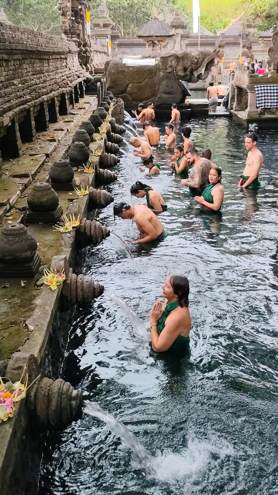

🇮🇩 Bali · Tirta Empul
🐍 Schlange stehen
Für die heilige Waschung im Wasser-Tempel Tirta Empul muss man erst mal – Schlange stehen. Im wörtlichsten Sinne. 😄 Reihe um Reihe geduldiger Menschen, die unter den steinernen Wasserspeiern beten und sich reinigen. Heiliges Wasser gibt es eben nicht ohne ein bisschen Geduld.